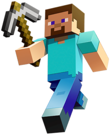

|
This character is Steve from the game Minecraft. He is the only human in the world of Minecraft. He is one of the only creatures who can build and craft. His enemies are the hostile mobs, who do everything to try to kill him. He can craft armor, build houses, farm mobs, enter alternate universes, and even kill the ruler of the End Dimension, the Ender Dragon. |
- Can carry tons on gold
- Can kill dragons and withers
- Can warp reality with commands
- Has infinite materials in creative mode
- Near god-like abilities in creative mode
- Can revive infinitely in survival mode
- 
|
|
This is Heavy or Misha and he is from the game Team Fortress 2. He is a Mercenary who works for RED. He is a Russian who was in a gulag until he destroyed said gulag and freed everyone in there. He is the Heavy Weapons Guy of the group and carries a weapon that weighs 150 kilograms and fires bullets for 12 seconds. He is not very smart and can be outsmarted, but he has yet to meet someone to outsmart bullet. |
- Can respawn after dying
- Can carry weapons that weigh roughly 150 kilograms
- Abilities will be enhanced with medigun
|
 |
This character is known as Life Itself or Chuck from the game, S02E03 the game. He is Rene's strange neighbor. He can't get a job so he lives with his mama. He is also a skilled inventor. In the game, he owns a working jetpack and a sonic ray gun. He is a strange person and a complete madman. He uses these inventions to fight Rene in the game. He is also able to be cloned by the mayo monster. |
- Quite intelligent
- Can create inventions like a working jetpack and a super sonic ray gun
- Can be cloned
|
|
This character is the soldier, also known as Jane Doe, from Team Fortress 2. Soldier is yet another mercenary who works for RED. He is a proud American who, because of being rejected by every army, went on a Nazi killing spree. he is a big fan of Sun Tzu and is also a christian, despite mistaking some of Sun Tzu's work for the sacred book. He suffered with lead poisoning explaining his rather idiotic personality. |
- Can rocket launch all over the place
- Can revive due to Kill Me Come Back Stronger pills
- Can hit people with a shovel
|
|
This is Bridget from the game series, Guilty Gear. She is a skilled bounty hunter. She was originally male, but since she was a twin, twins were bad because of superstitions, so she had to be disguised as a girl. In the latest game, we understand more of her identity where she realizes she is a girl. She has a teddy bear who she calls Roger. She also has a town inside her. |
- High agility
- Good with yoyos
- Skilled in bounty hunting
|